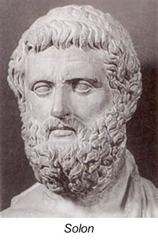
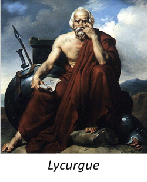

Histoire

Vasco de Gama est le fils d'Estêvao de Gama et de IsabelSodré. Il est né en 1469 à Sines, dans le sud ouest du Portugal. Son père étant le gouverneur
de Sines et Silves (deux petites villes), Vasco de Gama est le benjamin d'une famille de 5 enfants. Il passa ainsi son enfance bercée par les légendes des croisades et de la Reconquista.
Vers 1480, Vasco de Gama rejoint son père dans l'ordre de Santiago de L'Epée. Le maître de c'est ordre était alors le futur roi du Portgal, le prince Jean.
Lorsque en 1481 le prince Jean monte sur le trône, il favorisa les perspectives d'avenir de Vasco de Gama. En effet, en 1492, il envoie Vasco de Gama en mission pour saisir
des navires français. C'est ainsi que Vasco de Gama put prouver à son entourage pour la première fois son talent.
On connait aujourd'hui quelques sites paléolithiques en Grèce. Les plus anciennes traces humaines ont été découvertes dans la grotte de Petralona. Ces traces remonteraient à 700 000 av.JC. Le Néolitique en Grèce commence en 4500 av.JC et l'usage des métaux se développera à partir du IIIe millénaire av.JC.
⇫
Entre -2000 et -1900, de nouvelles peuplades arrivent en Grèce continentale. Ces peuplades
ont deux points communs entres elles, elles viennent du nord et parlent une
langue indo-européenne qui est déjà du grec. Les peuplades cherchent des prés pour nourrir leurs bêtes, un endroit où s'installer.
Ces nouveaux arrivants s'installent des deux côtés de la mer Egée. Ils se mêlent aux populations locales et apprennent à cultiver la vigne, l'olivier et les céréales; ils introduisent le
cheval et les armes en bronze. On les nomme les Achéens.
A partir du XVIe siècle av.JC, une brillante
civilisation, la civilisation mycénienne, se développe. Ils construisent de grandes
villes, les maisons en terre et aux toits en terrasse sont collées les unes aux autres. Aux sommets de ces villes se trouvent les
palais royaux. Le tout est entouré de murailles si puissantes, que les Grecs disaient que seuls
les Cyclopes avaient pu les édifier.
Petit à petit, au cours des premiers siècles du IIe millénaires, les Achéens commencent à occuper tout le Péloponnèse, l'Attique et la Grèce centrale. Ils s'aventurent
même à l'ouest, en Sicile et en Italie du Sud, à l'est sur les côtes d'Asie Mineure où ils s'installent à Milet. Dans l'île de Chypre, ils bâtissent la forteresse d'Enkomi. Ils vont également en Syrie et au Liban et
multiplient ainsi les échanges commerciaux. En Egypte, ils remontent le Nil jusqu'à Assouan.
Mycènes, Tyrinthe, Argos, Pylos... des cités aussi puissantes les unes que les autres.
Chacune d'elles forme un royaume indépendant mais le mode de gouvernement est le même et les gens vivent de la même façon... En période de guerre, ces villes s'unissent pour mieux se défendre.
Guerriers et conquérants, les Mycéniens inventent ou perfectionnent des armes . Les combattants
à pied sont protégés par des plastrons ou tabliers de cuir. Ils ont également des casques en cuir et sont armés d'épées à la lame effilée et longue de 60 à 95 cm ou d'une lance. Pour finir, un grand bouclier en forme de 8 les protége.
Aux environs de 1200, la civilisation mycénienne disparaît. Pendant les siècles
qui suivront, les Grecs auront beaucoup à réapprendre; notamment l'écriture.
En effet, de nouveaux arrivants, venus de Grèce du Nord, envahissent les royaumes mycéniens. Ce sont les Doriens. Les palais sont détruits et incendiés.
Petit à petit les vagues d'envahisseurs et les populations se fixent. On trouvera les Eoliens au nord, les Ioniens au centre et les Doriens
au sud. Ce sont tous des Grecs mais ils parlent des dialectes différents. C'est le début des "âges obscurs". On nomme cette période ainsi car le mode de vie
de cette époque nous est très mal connu. Il est probable que la moitié environ de la population a disparu pendant ces périodes d'invasions. Les communautés sont réduites.
Chacune d'entre elles sont dirigées par un roi, le "basileus", représentant les chefs de guerre. Ces communautés auront besoin de 4 siècles pour se structurer; et c'est à partir de cette structure que naîtra la cité grecque.
⇫Vers -800, une nouvelle structure politique et économique originale se met en place en Grèce. Elle dominera le monde grec pendant plusieurs siècles.
Petit à petit, autour des commnautés, l'agriculture se développe et la population augmente.
Les Grecs savent à présent faire des outils et des armes en fer.
A cette époque, un individu appartient d'abord à une famille. Les familles sont groupées en clans, eux même assemblés
en phraties, elles mêmes regroupées en tribus. L'ensemble des tribus forme une cité.
Pour résoudre les problèmes opposant les uns aux autres, Athènes entreprend une série de réformes écrit par Dracon en -621.
A cette époque, la Grèce est composée d'une multitude de polis, des cités-Etats.
Toutes ces cités sont indépendantes et, au cours des siècles à venir, elles se combattront souvent.
Elles ont néanmoins en commun la langue, la culture et l'identité. En effet à elles toutes elles forment le monde grec. Ce sont principalement
des oligarchies.
Athènes, elle, est dirigée par des eupatrides (des nobles). Elle est gouvernée
par trois magistrats, appelés les archontes, et par un conseil: l'Aréopage, constitué d'anciens Archontes.
Dès le VIIe, les cités grecques commencent à essaimer: elles envoient leurs citoyens fonder de nouvelles villes autour de la mer Méditerranée. En effet, avec l'accroissement de la poulation, la production agricole devient insuffisante et les villes grecques ne parviennent pas toujours à nourrir tout le monde. De plus, les petits paysans qui ont du vendre leurs pour faute d'argent, rêve de rebâtir de nouvelles exploitations agricoles.
Les premiers colons viennent d'Eubée (une île en Grèce) et de Grèce continentale. Ces expeditions sont organisées et ce sont de vrais cités indépendantes qui sont ainsi fondées.Dans certaines régions ou cités, la royauté perdure pendant de nombreux siècles. C'est le cas de la Macédoine. D'autres comme Sparte, créent un système complexe en installant une constitution oligarchique à côté de l'autorité royale. D'autres encore connaîtront le régime des tyrans soit provisoirement, soit pour longtemps comme Syracuse. Certaines enfin, comme Athènes mettront en place petit à petit une démocratie.
A Athènes,au tout début du VIe siècle, les aristocrates sont les seuls à détennir le pouvoir et
les richesses, notamment la terre. Celle-ci reste dans la famille. En effet, elle ne peut être ni vendue,
ni léguée. Quelqu'un qui naît dans une famille sans terre, n'a aucune chance d'en posséder une.
Quand les petits paysans sont endettés, leurs terres passent aux mains des grands propriétaires. Le code de Dracon
a mis en place des mesures, mais celles-ci ne suffisent pas. Le peuple réclame des réformes politiques et sociales.
C'est Solon qui va s'en charger.
Solon revoit la division des citoyens en tenant compte de leurs revenus fonciers.
Quatre classes sont ainsi déterminées; ceux dont les revenus sont les plus importants appartiennent à la première,
les plus pauvres faisant partie de la quatrième. Ensuite, il répartit les charges et les droits de chacun. Cette division sert aussi à organiser le
recrutement des soldats. En effet, le soldat doit s'équiper à ses frais: les cavaliers sont recrutés dans les deux premières classes
alors que les hoplites, qui vont à pied, sont recrutés dans les deux dernières. 
Jusque-là, suls les eupatrides, qui
représentent une cinquantaine de famille de l'Attique, avaient accès aux magistratures. A présent
ce qui appartiennent aux trois premières classes peuvent y prétendre. Mais surtout, tous les citoyens peuvent siéger aux tribunal de l'Héliée,participer
aux délibérations de l'assemblée du peuple, voter et prendre la parole.
Solon va révolutionnert la société athénienne:
A la mort de Solon, Athènes connait une période agitée qui se termine par la prise de pouvoir par le tyran Pisistrate. Pisistrate s'appuie sur une garde de mercenaires et sur les classes inférieures. C'est sous règne qu'Athènes commence son ascension politique, économique et intellectuelle. A sa mort en 527, son fils Hipparque lui succède. Il sera assassiné en 514. Son frère Hippias prrendra la succession pour être chassé d'Athènes en 510. La route vers la démocratie est alors ouverte...
Sur le plan politique, Sparte connait une évolution particulière qui s'explique en partie par son histoire. En effet,pendant les âges obscurs, des Doriens s'installent au coeur du Péloponnèse, dans une région déjà peuplée. Ces Doriens ne sont pas très nombreux,mais ils militairement puissant. Ils mettent en place un régime oligarchique de type militaire pour assurer leur domination et le contrôle de la population.
On attribue à Lycurgue les changements qui interviennent à la fin du VIIe
siècle avant JC. Contrairement à la plupart des cités grecques. En effet, elle est dirigée par deux rois qui règnent
ensemble. L'un appartient à la famille des Agides, l'autre à la famille des Euripontides, et les
deux familles prétendent descendre d'Héraclès. A côté, cinq éphores sont élus, pour une durée d'un an,
par l'assemblée du peuple. En fait, ce sont eux qui exercent le pouvoir, ils surveillent toute la
cité y compris les rois.
Le sénat est composé de 28 vieillards âgés d'au moins 60 ans
et nommés à vie par l'assemblée du peuple; Il est présidé par les deux rois. Il donne son avis
sur les questions importantes, propose les lois, juge les criminels. Enfin, l'assemblée
du peuple réunit les citoyens de plus de 30 ans. Son seul pouvoir est d'aprouver les propositions
du Sénat, sans avoir le droit de les discuter. C'est elle aussi qui élit les éphores et les membres
du Sénat.Tout se fait par acclamation: c'est le cri le plus fort qui l'emporte.
Aux frontières du monde grec, un immense empire se forme, l'Empire perse. Il menace bientôt les cités grecques.
Sur les plateaux d'Iran, un redoutable empire se constitue au milieu du VIe siècle, l'Empire perse. Son roi Cyrus bat Crésus et s'empare des cités grecques d'Asie Mineure et plusieurs îles grecques. Son fils Cambyse, puis le roi Darius étendront encore leurs frontières. Les cités et les îles grecques se révoltent, mais Athènes et Erétrie ontt beau leur venir en aide, Darius organise avec succès son expédition punitive. Mais l'ambition de Darius va plus loin: c'est la Grèce entière qu'il veut soumettre.
En 490, Darius décide de réaliser ses ambitions, il envoie une armée de 25000 hommes,
fantassins et cavaliers en Grèce. Les Perses soumettent les îles des Cyclades, rase Erétrie et
débarquent dans la baie de Marathon. Leur plan est d'utiliser la route qui conduit tout droit
à Athènes pour l'attaquer par la terre.
Mais tout ne se passe pas comme prévu. En effet,
les Athèniens on décidé de ne pas attendre derrière leurs murs et ils partent à la rencontre
des Perses. Sous l'impulsion de Miltiade, l'un des stratèges, ils attaquent les premiers. L'armée
perse connaient de lourdes pertes et ses soldats regagnent les navires. Les Perses renoncent à la Grèce
et font demi-tour.
A Marathon, les grecs ont pris conscience qu'ils opposaient à un empire
centralisé, où les hommes sont des sujets, une démocratie composée de citoyens où chacun
est attaché à sa liberté/C'est cet idéal qu'il ont tout défendu.
Dix ans après Marathon, les Perses tentent une nouvelle offensive. Ils lancent contre les Grecs la plus grande armée jamais vu sur la Méditerranée. Devant cette menace, les cités grecques vont s'unirent.
Darius n'a jamais accepté sa défaite à Marathon. On raconte que chaque jour il répéter:"Souviens-toi des Athéniens", mais il meurt sans entreprendre de nouvelle expédition. C'est son fils Xerxès qui va s'en charger. Il envoie une armée en Grèce par le nord pendant que sa flotte suit une route parallèle par la mer. A la hauteur de l'Eubée, les Perses se heurtent aux Grecs commandés par le roi de Sparte Léonidas.Ils parviennent à tenir les Perses en échec dans un long défilé étroit entre montagne et mer, les Thermopyles. Mais, les Perses,guidés par un traître, contournent le défilé et massacrent Léonidas et ses 300 Spartiates ainsi que 700 Thébains.
Pendant que l'armée perse livre bataille sur terre aux Thermopyles, la flotte perse affronte
les navires grecs en face au cap de l'Artémission. Les bateaux perses sont bien plus nombreux,
mais comme l'endroit est étroit,seuls quelques-uns peuvent approcher, les autres devant rester au large.
De plus, les tempêtes sont violentes et nombreuses en été , et beaucoup de bateaux perses furent
décimés.
Xerxès arrive sous les murs d'Athènes, qu'il fait incendier et piller. Thémistocle, une
homme d'état athéniens avait fait auparavant évacuer la population dans l'île de Salamine, gardée par
la flotte grecque. Tel était le plan de Thémistocle : attirer les perses dans le détroit qui sépare Salamine
du continent et les battre...sur mer. Pendant la bataille, les perses essuient de nombreuses pertes
et doivent battre en retraite.
Après Salamine, les Perses rentrent chez eux en laissant en Thessalie un corps
d'occupation, ce qui représente une menace permanente pour les Grecs.
Les Athéniens
décident d'attaquer d' en finir en rassemblant une armée de 50 000 hommes sous le commandement
du Sparte Pausanias. La bataille de Platées en 479 marque la défaite de l'armée perse.

Entre les cités grecques, la paix ne dure jamais longtemps. En 431, une nouvelle guerre éclate. Elle marque le début du déclin car cette guerre épuisera les cités et un royaume dangereux prendra de l'importance au Nord, le royaume de Macédoine.
Tout commence par un conflit d'intérêts entre Athènes et Corinthe. Bientôt, par le jeu des
alliances, toutes les cités entre dans le conflit. Sparte, qui ne voyait pas d'un très bon oeil la montée en
puissance d'Athènes, lui déclare la guerre. Cette guerre durera 27 ans, de -431 à -404, et se soldera par la
défaite d'Athènes.
La guerre du Péloponnaise a des conséquences sérieuses. Les cités ont connu
des pertes humaines importantes et vivent maintenant de graves crises sociales, les campagnes sont ravagées.
Athènes retrouve une certaine puissance alors que Sparte, pourtant victorieuse, connait le déclin. Pendant ce
temps, Thèbes, monte en puissance et compte bien agrandire sa sphère d'influence. Pour finir, c'est la Macédoine
qui mettera tout le monde d'accord.
En effet, au nord de la Grèce, un puissant royaume s'est constitué , sa
capitale est Pella et son roi est Philippe II.
Philippe II appartient à la dynastie des Argéades. Pendant son adolescence,
il passe 3 ans à Thèbes où il se familiarisa avec la culture grecque. A 22 ans il est nommé régent de Macédoine et il entreprend alors
d'organiser une puissante armée qui le fait roi. Avec la conquête de l'est de la Macédoine, Philippe contrôle les mines d'or des monts
du Pangée et devient le roi le plus riche de Grèce. Alors commence l'expansion macédonienne.
La victoire de Phlippe à Chéronée, en 338, marque le déclin du système politique des cités autonomes. L'avenir appartient désormais aux royaumes. En 337, Philippe réunit une assemblée générale des Hellènes à laquelle toutes les cités, sauf Sparte envoient des représentants. La Ligue de Corinthe crait pour la première fois, une sorte d'Etat réunissant les Grecs. La Macédoine ne fait pas partis de cette ligue, elle est son alliée, et Philippe le chef de l'armée fédérale.
royaume de macédoine à la mort de Philippe II